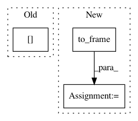

34e7e918bd4fc09f643e8bb448e875a9bcb7e841,linearmodels/panel/data.py,PanelData,first_difference,#PanelData#,253
Before Change
diffs = self._frame.diff(1).iloc[1:]
elabels = self._frame.index.labels[0]
same = elabels[1:] == elabels[:-1]
diffs = diffs.loc[same]
diffs = self._minimize_multiindex(diffs)
return PanelData(diffs)
After Change
diffs = pd.Panel(diffs, items=self.vars,
major_axis=self.time[1:],
minor_axis=self.entities)
diffs = diffs.swapaxes(1, 2).to_frame(filter_observations=False)
diffs = diffs.reindex(self._frame.index).dropna(how="any")
return PanelData(diffs)
@staticmethod
def _minimize_multiindex(df):
In pattern: SUPERPATTERN
Frequency: 4
Non-data size: 3
Instances
Project Name: bashtage/linearmodels
Commit Name: 34e7e918bd4fc09f643e8bb448e875a9bcb7e841
Time: 2017-03-29
Author: kevin.k.sheppard@gmail.com
File Name: linearmodels/panel/data.py
Class Name: PanelData
Method Name: first_difference
Project Name: dirty-cat/dirty_cat
Commit Name: 39813c572463211d05f35a0dcac56ba7bd07c725
Time: 2018-06-07
Author: pierreglaser@msn.com
File Name: examples/plot_investigating_dirty_categories.py
Class Name:
Method Name:
Project Name: Featuretools/featuretools
Commit Name: 676b7ccc8d947b028711e79467649221c4388396
Time: 2018-08-24
Author: kmax12@gmail.com
File Name: featuretools/entityset/entity.py
Class Name: Entity
Method Name: query_by_values
Project Name: bashtage/linearmodels
Commit Name: 0789fcd7689413315d6d65e973382fac97192af3
Time: 2017-04-26
Author: kevin.k.sheppard@gmail.com
File Name: linearmodels/panel/model.py
Class Name: FirstDifferenceOLS
Method Name: fit